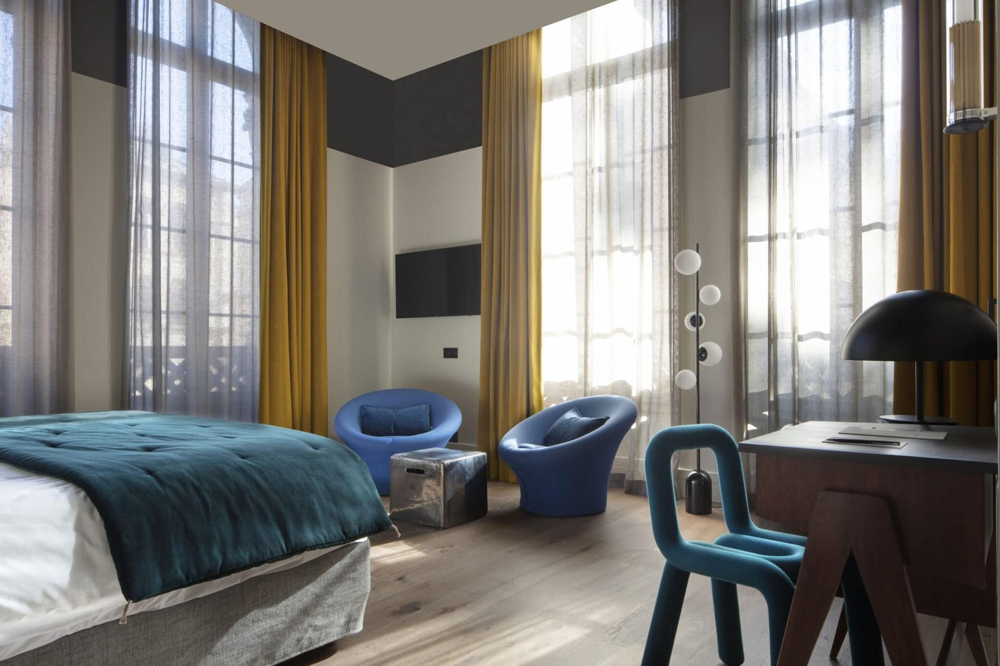

Meilleurs hôtels 4 étoiles à Lyon : 8 adresses classées en 2026
Huit maisons réellement classées 4 étoiles, de la colline de Fourvière à la Part-Dieu,
départagées par le score LMHS et l'Indice gastronomique. Le mieux doté d'entre eux abrite
un spa de 8 500 m², le plus vaste city spa de France.
Par Swann Bertaud, rédacteur hôtellerie de luxe✺Publié le 19 août 2026✺15 min de lecture
L'ancienne chapelle du couvent de la Visitation, devenue le hall du Fourvière
Hotel, première adresse de ce palmarès. Photo : site officiel.
L'essentielTrois adresses, trois raisons d'y dormir
Fourvière Hotel (colline de Fourvière), 8,2/10 : un ancien couvent de la
Visitation dont la chapelle sert de hall, un bouchon intégré et le meilleur
Indice gastronomique de la sélection, 4,6/5.
Hôtel Lyon Métropole & Spa, 8,1/10 : 8 500 m² de spa, le plus
vaste city spa de France, avec un parcours d'hydromassage à ciel ouvert chauffé à 37 °C
toute l'année. Aucun 5 étoiles lyonnais n'en propose autant.
Carlton Lyon MGallery (Presqu'île), 8,0/10 : l'Art déco au pied de
l'Opéra, le meilleur emplacement de la page pour qui veut tout faire à pied.
Palmarès documentaire. Nous n'avons pas séjourné dans ces huit maisons
pour cette édition, et nous le disons plutôt que de le laisser croire. Classements en étoiles,
capacités et prestations relevés le 19 août 2026. Les notes du Fourvière Hotel, du
Carlton Lyon MGallery et du Collège Hotel sont reprises à l'identique de notre
palmarès des meilleurs hôtels de Lyon, afin qu'une
même adresse ne porte jamais deux notes différentes sur ce site.
Cette page ne retient que les établissements réellement classés 4 étoiles,
et c'est une précision qui a des conséquences. La Cour des Loges, que la
plupart des sélections « 4 étoiles lyonnaises » placent en tête, est un
5 étoiles. Il en va de même de la Villa Florentine, de
l'Hôtel Le Royal et du Sofitel Lyon Bellecour. Ces quatre
adresses figurent dans notre palmarès lyonnais toutes
catégories, pas ici.
Le classement s'appuie sur le Score LMHS sur 10, issu de notre grille
Destination, et sur l'Indice gastronomique sur 5, notre indice lyonnais, qui
mesure l'ancrage culinaire réel de chaque maison : présence d'un bouchon ou d'une table
étoilée, travail des produits de la région, capacité à nourrir ses clients autrement qu'au
petit-déjeuner. À Lyon, ce critère n'est pas un supplément d'âme, c'est le sujet.
Notre sélection : les 8 meilleurs 4 étoiles de Lyon en 2026
C'est le meilleur 4 étoiles lyonnais de nos relevés, et l'écart avec les suivants tient
à deux choses. La première est le bâti : un ancien couvent de la Visitation
dont la chapelle a été convertie en hall, volume que personne d'autre ne peut proposer en
ville. La seconde est la table. Le Fourvière Hotel a intégré un bouchon,
ce qui lui vaut le meilleur Indice gastronomique de cette page, 4,6/5, et
le place même devant des 5 étoiles lyonnais sur ce critère. Ajoutez un spa et une position
sur la colline, à quelques minutes du Vieux-Lyon par les montées. Le bémol : la colline se
mérite, et il faut composer avec le funiculaire ou la voiture pour rejoindre la Presqu'île
le soir.
Ancien couvent de la Visitation · Bouchon intégré · Spa · Meilleur Indice gastronomique de la page
02
Hôtel Lyon Métropole & Spa, 8 500 m² de bien-être 8,1/10
119 à 290 €/nuit en chambre double, junior suite de 149 à 320 €,
petit-déjeuner 22 €.
C'est l'anomalie de ce palmarès, et il faut la dire clairement : ce 4 étoiles abrite
le plus vaste city spa de France, 8 500 m². Aucun 5 étoiles lyonnais ne
s'en approche. On y trouve un parcours d'hydromassage à ciel ouvert chauffé à
37 °C toute l'année, ce qui change complètement l'usage d'un séjour urbain en
janvier. La maison compte 174 chambres, face aux berges de la Saône, au
pied de la Croix-Rousse. Le bémol, et il explique que la maison ne prenne pas la première
place : l'ancrage culinaire lyonnais est faible pour une adresse de cette taille, d'où un
Indice gastronomique à 2,8/5, et l'emplacement, à l'écart du centre historique, suppose les
transports. Pour qui vient d'abord pour le spa, c'est sans équivalent en ville.
174 chambres · Spa de 8 500 m², le plus vaste city spa de France · Hydromassage extérieur à 37 °C toute l'année ·
Site officiel →
03
Carlton Lyon MGallery, l'Art déco de la Presqu'île 8,0/10
Le Carlton tient la meilleure adresse de cette page pour qui veut tout faire à pied :
au cœur de la Presqu'île, à quelques pas de l'Opéra, de la place des
Terreaux et des rues commerçantes. L'intérieur joue l'Art déco sans
pastiche, avec des volumes et des circulations qui datent d'une époque où l'on construisait
large. Le service MGallery est régulier, la propreté irréprochable. Le bémol : le rapport
qualité-prix se tend en haute saison, où la fourchette monte à 420 €, et certaines chambres
d'entrée de gamme sont étroites au regard du tarif. Son Indice gastronomique de 3,5/5
reflète une table correcte mais sans ambition lyonnaise particulière.
Presqu'île, au pied de l'Opéra · Art déco · Collection MGallery
04
Pullman Lyon Part-Dieu, le design et la table sud-américaine 7,8/10
Le plus contemporain de la sélection, et le mieux placé pour qui arrive en train :
la gare de la Part-Dieu est à quelques minutes. L'établissement joue une carte
design assumée, avec un lobby très végétalisé et des chambres aux volumes
généreux, ce qui en fait l'une des rares adresses de cette page réellement confortable pour
une famille. Sa table, Pampa, à l'accent sud-américain, lui vaut le
deuxième meilleur Indice gastronomique du palmarès, 3,6/5 : ce n'est pas
de la cuisine lyonnaise, mais c'est une vraie table, ouverte sur la ville. Salle de sport
équipée. Le bémol : la Part-Dieu reste un quartier d'affaires, sans charme le dimanche, et
l'orientation entreprise de la maison se sent dans les tarifs de semaine.
Quartier de la gare Part-Dieu · Restaurant Pampa · Chambres familiales · Salle de sport
05

Hôtel de l'Abbaye, l'ancien presbytère d'Ainay 7,6/10
C'est la plus petite maison de cette page, et la plus attachante. L'hôtel occupe
l'ancien presbytère du quartier d'Ainay, dans le sud calme de la
Presqu'île, et compte vingt et une chambres réparties sur trois étages,
décorées au cas par cas entre design contemporain et mobilier de famille. Plusieurs
donnent sur la basilique d'Ainay, et les junior suites Signature ajoutent
un petit salon. Contrairement à ce qu'on lit souvent, la maison a bien une table :
L'Artichaut, quarante-cinq couverts, ouvert du mardi au samedi midi et
soir ainsi que le dimanche midi, plus un café ouvert à tous de 7 h à 22 h. Le bémol :
vingt et une clés, donc une disponibilité étroite, et aucun spa ni salle de sport, la
maison ayant fait le choix de l'intimité plutôt que des équipements.
21 chambres · Ancien presbytère d'Ainay · Vue sur la basilique · Restaurant L'Artichaut, 45 couverts ·
Site officiel →
06
Okko Hotels Lyon Centre, l'efficacité au meilleur prix 7,2/10
C'est le meilleur ticket d'entrée de cette page, et l'adresse à retenir pour un séjour
court. Okko applique à Lyon sa formule : des chambres compactes mais bien dessinées, un
club en libre accès qui remplace le bar et le salon avec boissons et
en-cas inclus, et un emplacement au pied du pont Lafayette, à cheval entre
la Presqu'île et la rive gauche. Tout se fait à pied. Le bémol est structurel : la
chambre est petite, il n'y a pas de restaurant, et l'ancrage lyonnais est nul, d'où un
Indice gastronomique à 2,0/5, le plus bas de la sélection. C'est un hôtel de ville
efficace, pas une adresse de séjour.
Pont Lafayette · Formule club avec boissons et en-cas inclus · Pas de restaurant ·
Site officiel →
07
Collège Hotel, la salle de classe du Vieux-Lyon 7,0/10
84 à 230 €/nuit selon la saison, le tarif d'entrée le plus bas de cette
page.
Le parti pris est franc : l'hôtel rejoue l'école des années 1930, pupitres, tableaux
noirs et chambres blanches façon salle de classe. On aime ou non, mais c'est cohérent, et
cela distingue la maison dans un Vieux-Lyon où l'offre penche vers le
pastiche Renaissance. La situation est excellente, en plein secteur classé à l'UNESCO, à
pied des traboules et des bouchons de la rue Saint-Jean. Le bémol : les chambres sont
petites, l'équipement minimal, et le concept ne convient pas à tout le monde. C'est
l'adresse des séjours courts à budget contenu, pas celle d'une semaine à deux.
Vieux-Lyon, secteur UNESCO · Décor d'école des années 1930 · Le tarif d'entrée le plus bas de la page
08
Crowne Plaza Cité Internationale, le parc au pied de l'hôtel 6,8/10
La Cité Internationale, dessinée par Renzo Piano le long du Rhône, borde le
parc de la Tête d'Or, et c'est l'argument de cette adresse : on sort de
l'hôtel et on entre dans le plus grand parc urbain de France. Les chambres sont
spacieuses, le calme réel, l'ensemble fiable et sans surprise. Pour un séjour en famille
ou pour qui court le matin, c'est cohérent. Le bémol, et il pèse sur le score : on est
loin de tout le reste. Le Vieux-Lyon et la Presqu'île supposent le bus ou
le vélo, le quartier est mort le soir, et l'ancrage lyonnais de la maison est faible. C'est
un bon hôtel dans un emplacement qui ne sert qu'un type de séjour.
Au bord du parc de la Tête d'Or · Quartier Renzo Piano · Chambres spacieuses · Excentré
Tableau comparatif : les 4 étoiles de Lyon 2026
Hôtel
Quartier
Score LMHS
Indice gastronomique
Spa
Restaurant
Pour qui
Fourvière Hotel
Fourvière
8,2/10
4,6/5
Oui
Bouchon intégré
Table, patrimoine
Hôtel Lyon Métropole
Quai Gillet, 4e
8,1/10
2,8/5
8 500 m²
Oui
Spa, familles
Carlton Lyon MGallery
Presqu'île
8,0/10
3,5/5
Non
Oui
Emplacement, affaires
Pullman Lyon Part-Dieu
Part-Dieu
7,8/10
3,6/5
Non
Pampa
Familles, design, train
Hôtel de l'Abbaye
Ainay, Presqu'île
7,6/10
3,4/5
Non
L'Artichaut
Couples, intimité
Okko Hotels Lyon Centre
Pont Lafayette
7,2/10
2,0/5
Non
Non
Budget, séjour court
Collège Hotel
Vieux-Lyon
7,0/10
3,0/5
Non
Non
Budget, UNESCO
Crowne Plaza Cité Internationale
Cité Internationale
6,8/10
2,6/5
Non
Oui
Calme, parc, familles
Classement par Score LMHS. Les notes du Fourvière Hotel, du
Carlton Lyon MGallery et du Collège Hotel sont reprises à
l'identique de notre palmarès des meilleurs hôtels de
Lyon, afin qu'une même adresse ne porte jamais deux notes différentes sur ce site. Les
tarifs ne sont publiés que lorsqu'ils ont été confirmés à la source. Classements en étoiles,
capacités et prestations relevés le 19 août 2026.
Pourquoi la Cour des Loges n'est pas dans ce palmarès
C'est la question que pose immanquablement une sélection de 4 étoiles lyonnais, parce que la
plupart des listes concurrentes y placent la Cour des Loges en tête. Or la
Cour des Loges, Radisson Collection, est classée 5 étoiles. Elle figure à ce
titre dans notre palmarès lyonnais toutes catégories,
où nous la notons 9,0/10, en deuxième position derrière la Villa Florentine.
Trois autres adresses souvent citées dans les listes « 4 étoiles » sont dans le même cas :
la Villa Florentine (9,3/10), l'Hôtel Le Royal Lyon MGallery
(8,5/10) et le Sofitel Lyon Bellecour (7,5/10). Toutes sont classées 5 étoiles.
Les inclure ici reviendrait à comparer des maisons qui ne jouent pas dans la même catégorie
tarifaire ni réglementaire, ce qui est exactement ce qu'un lecteur cherchant un 4 étoiles veut
éviter.
Le Score LMHS sur 10 relève de la
grille LMHS Destination : emplacement, confort, originalité,
rapport qualité-prix, avis clients vérifiés. L'Indice gastronomique sur 5 est
notre indice lyonnais, et il mesure l'ancrage culinaire réel, présence d'un bouchon ou d'une
table étoilée comprise. Ce palmarès est documentaire : aucun séjour de
contrôle n'a été effectué pour cette édition, et nous ne prétendons pas le contraire. Aucun
partenariat commercial, aucune affiliation.
Choisir son 4 étoiles lyonnais selon ce que vous cherchez
Pour la table, le Fourvière Hotel et son bouchon intégré
n'ont pas d'équivalent à ce classement, avec un Indice gastronomique de 4,6/5. Le
Pullman suit avec Pampa, et l'Hôtel de l'Abbaye avec
L'Artichaut. Les trois évitent d'avoir à ressortir dîner.
Pour le spa, la question est réglée : l'Hôtel Lyon Métropole
et ses 8 500 m² écrasent la concurrence, y compris chez les 5 étoiles de la ville. Le Fourvière
Hotel dispose d'un espace plus modeste. Les six autres n'en ont pas.
Pour tout faire à pied, restez sur la Presqu'île : le
Carlton au pied de l'Opéra, l'Abbaye dans le calme d'Ainay,
Okko au pont Lafayette. Le Collège Hotel place dans le
Vieux-Lyon, secteur classé à l'UNESCO, à condition d'accepter les montées.
Pour un budget serré, le Collège Hotel ouvre à 84 € en
basse saison, et Okko offre le meilleur rapport prestations-prix pour deux
nuits. Pour une famille, le Pullman et le
Crowne Plaza proposent les chambres les plus spacieuses, et le second borde le
parc de la Tête d'Or.
Selon nos relevés 2026, le Fourvière Hotel, à 8,2/10 : un ancien couvent de la Visitation dont la chapelle sert de hall, un bouchon intégré et le meilleur Indice gastronomique de la sélection, 4,6/5. Précision utile : la Cour des Loges, que beaucoup de listes présentent comme un 4 étoiles, est en réalité classée 5 étoiles et ne figure donc pas dans ce palmarès.
Quel hôtel 4 étoiles de Lyon a le meilleur spa ?
L'Hôtel Lyon Métropole & Spa, sans discussion possible : son espace bien-être fait 8 500 m² et constitue le plus vaste city spa de France. Il comprend un parcours d'hydromassage à ciel ouvert chauffé à 37 °C toute l'année. Aucun établissement lyonnais, y compris parmi les 5 étoiles, n'en propose autant. Le Fourvière Hotel dispose d'un espace plus modeste ; les six autres adresses de ce palmarès n'ont pas de spa.
Combien coûte un hôtel 4 étoiles à Lyon ?
Les tarifs que nous avons pu confirmer à la source vont de 84 € en basse saison au Collège Hotel à 420 € en haute saison au Carlton. Entre les deux, le Fourvière Hotel s'échelonne de 108 à 310 €, et l'Hôtel Lyon Métropole de 119 à 290 € en chambre double. L'écart entre basse et haute saison dépasse souvent le double : la période de réservation pèse davantage que le choix de l'établissement.
La Cour des Loges est-elle un hôtel 4 étoiles ?
Non. La Cour des Loges, Radisson Collection, dans le Vieux-Lyon, est classée 5 étoiles. Nous la notons 9,0/10 dans notre palmarès lyonnais toutes catégories, où elle occupe la deuxième place derrière la Villa Florentine. Trois autres adresses fréquemment présentées comme des 4 étoiles sont également des 5 étoiles : la Villa Florentine, l'Hôtel Le Royal Lyon MGallery et le Sofitel Lyon Bellecour.
Quel quartier choisir pour un hôtel 4 étoiles à Lyon ?
La Presqu'île pour tout faire à pied, commerces, Opéra et restaurants compris : Carlton, Hôtel de l'Abbaye, Okko. Le Vieux-Lyon, secteur classé à l'UNESCO, pour les traboules et les bouchons : Collège Hotel. La colline de Fourvière pour la vue et le calme, avec le funiculaire pour redescendre. La Part-Dieu si vous arrivez en train. La Cité Internationale si vous cherchez le parc de la Tête d'Or et la tranquillité, en acceptant d'être excentré.
Quelle est la différence entre un 4 et un 5 étoiles à Lyon ?
Le classement en étoiles est délivré par Atout France sur des critères mesurables : surfaces des chambres, amplitude de la réception, services proposés, langues parlées. Un 5 étoiles lyonnais garantit notamment une réception ouverte plus largement et des surfaces minimales supérieures. Dans les faits, l'écart de prix se situe autour de 50 à 150 € la nuit. Notre palmarès montre surtout qu'un 4 étoiles peut dépasser un 5 étoiles sur un critère précis : le Fourvière Hotel devance le Sofitel Lyon Bellecour et l'Hôtel Le Royal à l'Indice gastronomique, et l'Hôtel Lyon Métropole possède le plus grand spa de la ville.
Le mot de SwannÀ Lyon, la question n'est pas le nombre d'étoiles
Ce classement dit deux choses que les listes lyonnaises répètent rarement. La première est qu'un bon quart des adresses présentées ailleurs comme des 4 étoiles n'en sont pas : la Cour des Loges, la Villa Florentine, Le Royal et le Sofitel sont des 5 étoiles, et les mélanger ne rend service à personne, surtout pas au lecteur qui cherche une catégorie de prix. La seconde est que le meilleur spa de Lyon, et de très loin, appartient à un 4 étoiles. Huit mille cinq cents mètres carrés, avec un bassin d'hydromassage dehors, chauffé à 37 degrés en plein hiver : aucun palace de la ville ne peut aligner ça. Voilà pourquoi je me méfie des classements par étoiles. Elles mesurent des surfaces et des horaires de réception, pas ce qui fait qu'on se souvient d'une nuit. Une réserve, que je préfère écrire : nous n'avons dormi dans aucune de ces huit maisons pour cette édition.
Swann Bertaud, rédacteur hôtellerie de luxe
Méthode et sources
8 hôtels lyonnais réellement classés 4 étoiles, ordonnés par le Score LMHS sur 10, issu de la grille LMHS Destination, et documentés par l'Indice gastronomique sur 5, notre indice lyonnais, qui mesure l'ancrage culinaire réel. Aucun séjour de contrôle n'a été effectué pour cette édition, et nous ne prétendons pas le contraire. Les notes du Fourvière Hotel, du Carlton Lyon MGallery et du Collège Hotel sont reprises à l'identique de notre palmarès des meilleurs hôtels de Lyon, afin qu'une même adresse ne porte jamais deux notes différentes sur ce site. Cinq adresses sont notées ici pour la première fois. Classements en étoiles vérifiés un par un, la Cour des Loges, la Villa Florentine, l'Hôtel Le Royal et le Sofitel Lyon Bellecour ayant été écartés parce qu'ils sont classés 5 étoiles. Capacités, prestations et tarifs relevés le 19 août 2026 sur les sites officiels des établissements et auprès de l'office de tourisme de Lyon. Les tarifs ne sont publiés que lorsqu'ils ont été confirmés à la source. Aucun partenariat commercial, aucune affiliation. Photographies : sites officiels des établissements.
8 adresses 4 étoilesIndice gastronomique /5Sans séjour de contrôle0 partenariat